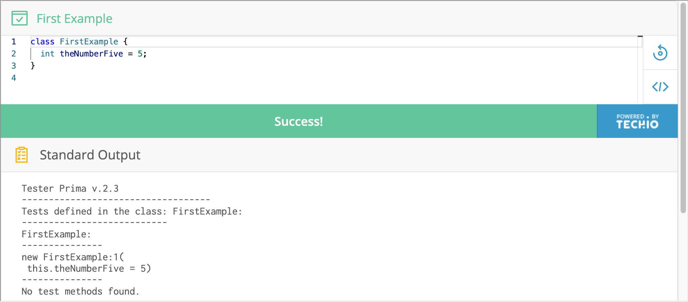

1.1 — Programs, Fields
In this course, we’ll write, test, and run programs in a language called Java. What that means (in very blunt terms) is that we’ll put a bunch of text into a file with the extension .java (or, in the case of this online textbook, into a text box on the screen), and use tools to run it and check the output. For now, most of the details are hidden from you. We will tell you what to type at first, and then slowly give you less and less specific guidance as we explain more about what you've done.
Do Now! In the box below, copy this program:
class FirstExample {
int theNumberFive = 5;
}Then click the blue Run button and look at the results.
You should see something like this:

Next, change the 5 on line 2 into the number 40. Click on the green "Success!" button (it's the same Run button as before with a different label) to re-run the program. You should see the same kind of output but with 5 replaced with 40.
This is one of the primary activities we do when programming – we edit the text of our program, then run it somehow, and the programming environment shows us some output or results. In the next few steps and sections we'll be explaining, piece by piece, the output you see in this example – you're not expected to understand why this program produced this particular output yet.
We are using a particular style of embedding runnable programs into this book that will let you interactively try out and update the examples we provide, like you just did. Your work is usually saved across page refreshes but isn't saved forever; you should not rely on the text you just typed staying around forever. If you write a really cool program in one of these embedded programs that you don't want to lose, you should save it elsewhere.
Most of the time when this book gives you an embedded program, we'll ask you some questions about it so you can check your understanding and make sure you got the most out of the example. With that in mind, here's your first question:
Do Now! How many lines of the text in the output changed after you changed 5 to 40 and re-ran the program?
In the last step you ran this program:
class FirstExample {
int theNumberFive = 5;
}and saw this as the result:
Tester Prima v.2.3
-----------------------------------
Tests defined in the class: FirstExample:
---------------------------
FirstExample:
---------------
new FirstExample:1(
this.theNumberFive = 5)
---------------
No test methods found.Let's break down what this means and how that output was produced.
The first line is just telling us the name of the tool we are using (it was developed at Northeastern University [REF]).
The next few lines with dashes and the text “Tests defined in the class: FirstExample:”, and the last line “No test methods found” are unimportant for our understanding right now; we will talk about them in more detail in [REF section with tests].
The output that corresponded meaningfully to our first program was the part that reads
new FirstExample:1(
this.theNumberFive = 5)This fragment of the output is printing back to us, in a slightly different format, the information we wrote in the original program. In particular, this output is saying that a single object was created and its class was FirstExample. The number after the : is a unique identifier for this object which we call its reference (like your student PID, the number itself has no special meaning, it just matters that it is unique to this object). It has a single field, which we can refer to with this.theNumberFive, whose value is 5.
That's a lot of new vocabulary! We’ll define the terms object, class, reference, and field in detail later, and see many more examples of their use. For now, we're using them just to talk about the pieces of output we see when running these short programs.
(If you’ve programmed in Java before and are wondering how we ran a program without main(), we'll see it soon enough. Later on in the book, we’ll learn how to make more standalone applications, and this will include running programs from main().)
Do Now! Below, match up the vocabulary terms we just introduced with the code they correspond to in the first example.
Here's another class with more fields. This time, we've put the text directly into the program editor for you:
Indeed, we can declare an arbitrary number of fields and freely choose their names and values.
Do Now! Change the value of the field theNumberTwo to be 500, then re-run the program. Make a note of what you see in the output.
Sometimes, with the embedded programs in this book, we will make changes and then want to get back to the original version. The revert button (which looks like a circular arrow ) will restore the program to the way it originally appeared in the book. This removes your changes, so do it with caution if you're in the middle of working on something. However, since the programs in this book are quite short by design, it's a useful tool for if you get stuck.
Do Now! Click the revert button, which looks like this:
Note something really important – after clicking the revert button, the program reverts back to the original version, but the output doesn't immediately change. Just like when we edited the program ourselves, we would have to click Run (or Success, if we have run already) to see the output that reflects that change.
Summary
- In this book, we will write programs in Java, run them, and observe the output. You do not have to understand all the details immediately, as you will learn more about these things throughout the course.
- Currently, the output of the programs we are running will include an object, a class name, a reference, and fields. We will look at each of these terms in more detail later on.
- Any changes made in a program may affect the output of the program. You must re-run the program if you want to see the result of this change.
- Clicking the revert button will reset the code and remove all of your changes.